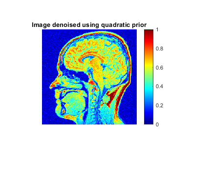
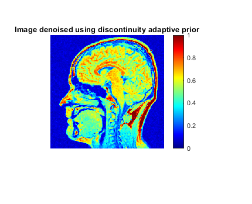
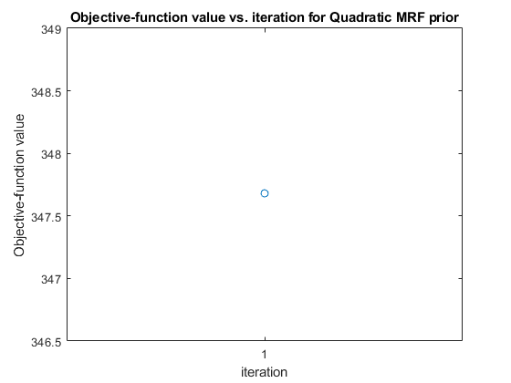
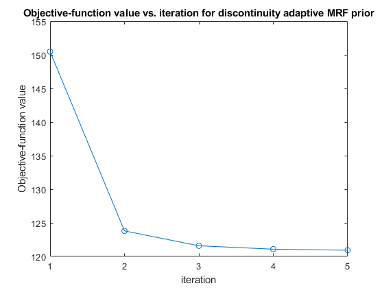
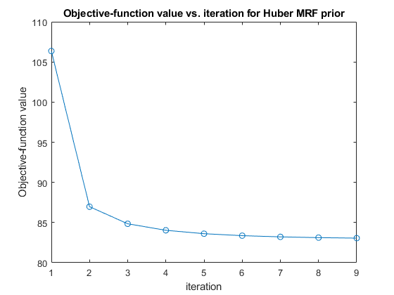

Contents
RRMSE between noisy and noiseless images
load('../data/brainMRIslice')
RRMSE_original = sqrt(sum((brainMRIsliceOrig - brainMRIsliceNoisy).^2))/sqrt(sum(brainMRIsliceOrig.^2));
disp("The value of the RRMSE between the original image and the noisy image is "+ RRMSE_original)
The value of the RRMSE between the original image and the noisy image is 0.12733
Optimality of alpha and gamma parameters for the three cases
alpha_quadratic = 0.87;
alpha_huber = 0.16;
gamma_huber = 0.008;
alpha_da = 0.25;
gamma_da = 0.018;
The optimal values are as follows,
disp("alpha = "+alpha_quadratic+" for Quadratic MRF")
disp("alpha = "+alpha_huber+" and gamma = " + gamma_huber+ " for Discontinuity-adaptive Huber MRF")
disp("alpha = "+alpha_da+" and gamma = " + gamma_da+ " for Discontinuity-adaptive MRF")
alpha = 0.87 for Quadratic MRF
alpha = 0.16 and gamma = 0.008 for Discontinuity-adaptive Huber MRF
alpha = 0.25 and gamma = 0.018 for Discontinuity-adaptive MRF
Various RRMSE values for the three priors and their optimal parameters are shown here.
RRMSE values corresponding to plus/minus 20% of the optimal value is also calculated in order to depict the optimality of
the above parameters obtained.
[quadraticDenoisedImage, objectiveValsQuadratic] = denoiseQuadraticMRF(alpha_quadratic, brainMRIsliceNoisy);
disp("RRMSE(alpha) for quadratic MRF is,")
disp(sqrt(sum((brainMRIsliceOrig - quadraticDenoisedImage).^2))/sqrt(sum(brainMRIsliceOrig.^2)))
disp("RRMSE(1.2*alpha) for quadratic MRF is,")
disp(sqrt(sum((brainMRIsliceOrig - denoiseQuadraticMRF(min(1.2*alpha_quadratic, 1), brainMRIsliceNoisy)).^2))/sqrt(sum(brainMRIsliceOrig.^2)))
disp("RRMSE(0.8*alpha) for quadratic MRF is,")
disp(sqrt(sum((brainMRIsliceOrig - denoiseQuadraticMRF(0.8*alpha_quadratic, brainMRIsliceNoisy)).^2))/sqrt(sum(brainMRIsliceOrig.^2)))
RRMSE(alpha) for quadratic MRF is,
0.1071
RRMSE(1.2*alpha) for quadratic MRF is,
0.1273
RRMSE(0.8*alpha) for quadratic MRF is,
0.1216
[huberDenoisedImage, objectiveValsHuber] = denoiseHuberMRF(alpha_huber, gamma_huber, brainMRIsliceNoisy);
disp("RRMSE(alpha, gamma) for Discontinuity-adaptive Huber MRF is,")
disp(sqrt(sum((brainMRIsliceOrig - huberDenoisedImage).^2))/sqrt(sum(brainMRIsliceOrig.^2)))
disp("RRMSE(1.2*alpha, gamma) for Discontinuity-adaptive Huber MRF is,")
disp(sqrt(sum((brainMRIsliceOrig - denoiseHuberMRF(min(1.2*alpha_huber, 1), gamma_huber, brainMRIsliceNoisy)).^2))/sqrt(sum(brainMRIsliceOrig.^2)))
disp("RRMSE(0.8*alpha, gamma) for Discontinuity-adaptive Huber MRF is,")
disp(sqrt(sum((brainMRIsliceOrig - denoiseHuberMRF(0.8*alpha_huber, gamma_huber, brainMRIsliceNoisy)).^2))/sqrt(sum(brainMRIsliceOrig.^2)))
disp("RRMSE(alpha, 1.2*gamma) for Discontinuity-adaptive Huber MRF is,")
disp(sqrt(sum((brainMRIsliceOrig - denoiseHuberMRF(alpha_huber, 1.2*gamma_huber, brainMRIsliceNoisy)).^2))/sqrt(sum(brainMRIsliceOrig.^2)))
disp("RRMSE(alpha, 0.8*gamma) for Discontinuity-adaptive Huber MRF is,")
disp(sqrt(sum((brainMRIsliceOrig - denoiseHuberMRF(alpha_huber, 0.8*gamma_huber, brainMRIsliceNoisy)).^2))/sqrt(sum(brainMRIsliceOrig.^2)))
RRMSE(alpha, gamma) for Discontinuity-adaptive Huber MRF is,
0.0991
RRMSE(1.2*alpha, gamma) for Discontinuity-adaptive Huber MRF is,
0.0996
RRMSE(0.8*alpha, gamma) for Discontinuity-adaptive Huber MRF is,
0.1009
RRMSE(alpha, 1.2*gamma) for Discontinuity-adaptive Huber MRF is,
0.1000
RRMSE(alpha, 0.8*gamma) for Discontinuity-adaptive Huber MRF is,
0.0997
[da_DenoisedImage, objectiveValsDA] = denoiseDAdapMRF(alpha_da, gamma_da, brainMRIsliceNoisy);
disp("RRMSE(alpha, gamma) for Discontinuity-adaptive MRF is,")
disp(sqrt(sum((brainMRIsliceOrig - da_DenoisedImage).^2))/sqrt(sum(brainMRIsliceOrig.^2)))
disp("RRMSE(1.2*alpha, gamma) for Discontinuity-adaptive MRF is,")
disp(sqrt(sum((brainMRIsliceOrig - denoiseDAdapMRF(min(1.2*alpha_da, 1), gamma_da, brainMRIsliceNoisy)).^2))/sqrt(sum(brainMRIsliceOrig.^2)))
disp("RRMSE(0.8*alpha, gamma) for Discontinuity-adaptive MRF is,")
disp(sqrt(sum((brainMRIsliceOrig - denoiseDAdapMRF(0.8*alpha_da, gamma_da, brainMRIsliceNoisy)).^2))/sqrt(sum(brainMRIsliceOrig.^2)))
disp("RRMSE(alpha, 1.2*gamma) for Discontinuity-adaptive MRF is,")
disp(sqrt(sum((brainMRIsliceOrig - denoiseDAdapMRF(alpha_da, 1.2*gamma_da, brainMRIsliceNoisy)).^2))/sqrt(sum(brainMRIsliceOrig.^2)))
disp("RRMSE(alpha, 0.8*gamma) for Discontinuity-adaptive MRF is,")
disp(sqrt(sum((brainMRIsliceOrig - denoiseDAdapMRF(alpha_da, 0.8*gamma_da, brainMRIsliceNoisy)).^2))/sqrt(sum(brainMRIsliceOrig.^2)))
RRMSE(alpha, gamma) for Discontinuity-adaptive MRF is,
0.0994
RRMSE(1.2*alpha, gamma) for Discontinuity-adaptive MRF is,
0.1000
RRMSE(0.8*alpha, gamma) for Discontinuity-adaptive MRF is,
0.1015
RRMSE(alpha, 1.2*gamma) for Discontinuity-adaptive MRF is,
0.1002
RRMSE(alpha, 0.8*gamma) for Discontinuity-adaptive MRF is,
0.0996
Plotting the noisy, noiseless and denoised images
imshow(brainMRIsliceOrig, 'colormap', jet)
colorbar
title('Noiseless Image')
figure
imshow(brainMRIsliceNoisy, 'colormap', jet)
colorbar
title('Noisy Image')
figure
imshow(quadraticDenoisedImage, 'colormap', jet)
colorbar
title('Image denoised using quadratic prior')
figure
imshow(huberDenoisedImage, 'colormap', jet)
colorbar
title('Image denoised using huber prior')
figure
imshow(da_DenoisedImage, 'colormap', jet)
colorbar
title('Image denoised using discontinuity adaptive prior')
 
Plotting the objective-function values versus iteration for the 3 denoised results
figure
plot(1:sum(objectiveValsQuadratic~=0), objectiveValsQuadratic(1:sum(objectiveValsQuadratic~=0)), '-o')
title("Objective-function value vs. iteration for Quadratic MRF prior")
xlabel("iteration")
ylabel("Objective-function value")
xticks(1:sum(objectiveValsQuadratic~=0))
figure
plot(1:sum(objectiveValsDA~=0), objectiveValsDA(1:sum(objectiveValsDA~=0)), '-o')
title("Objective-function value vs. iteration for discontinuity adaptive MRF prior")
xlabel("iteration")
ylabel("Objective-function value")
xticks(1:sum(objectiveValsDA~=0))
figure
plot(1:sum(objectiveValsHuber~=0), objectiveValsHuber(1:sum(objectiveValsHuber~=0)), '-o')
title("Objective-function value vs. iteration for Huber MRF prior")
xlabel("iteration")
ylabel("Objective-function value")
save("../results/resultValues")
  